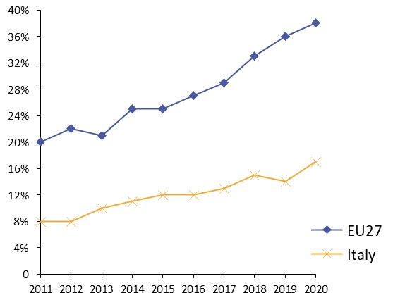
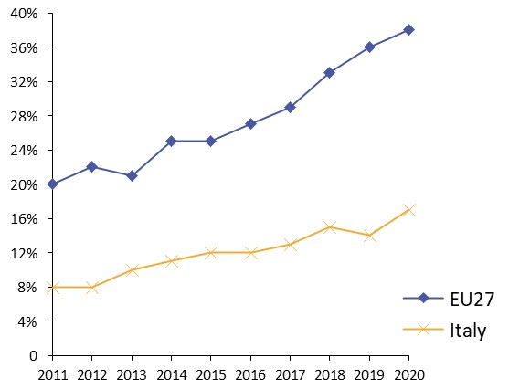

Digital Government Factsheet 2019
Liechtenstein
Table of Contents
Digital Government Highlights 6
Digital Government Political Communications 7
Digital Government Legislation 9
Digital Government Governance 13
Digital Government Infrastructure 16
Digital Government Services for Citizens 20
Digital Government Services for Businesses 25
Country Profile
Basic data
Population: 38 467 (2018)*
GDP at market prices: 6.1 in billion CHF (2018)**
GDP per inhabitant in PPS (Purchasing Power Standard EU-28=100): Not available
GDP growth rate: 1.40%***
Inflation rate: 0.7%***
Unemployment rate: 1.90%***
General government gross debt (Percentage of GDP): Not available
General government deficit/surplus (Percentage of GDP): Not available
Area: 160km²**
Capital city: Vaduz**
Official EU language: German**
Currency: CHF**
Sources:
**https://www.llv.li/files/as/liechtenstein-in-figures-2018.pdf
***https://tradingeconomics.com/liechtenstein/inflation-cpi
Digital Government Indicators
Liechtenstein, even though a member of the EEA, is not required to supply complete data to Eurostat due to its small size and population. As a result, there are no values for the usual indicators contained in this factsheet; instead, similar indicators are quoted from the UN E-Government Survey 2018.
The United Nations started assessing the global eGovernment development through its initiative “Benchmarking E-government: Assessing the United Nations Member States” in 2001. Since then the United Nations E-Government Survey has gained wide acceptance as a global authoritative measure of how public administrations provide electronic and mobile public services. The United Nations E-Government Survey measures the development of eGovernment using the E-Government Development Index (EGDI), which has the following three components:
- OSI – Online Service Index
- TII – Telecommunication Infrastructure Index
- HCI – Human Capital Index
According to the United Nations E-Government Survey, Liechtenstein has the following e-government indicators for 2018:
- E-Government Development Index: 0.8204 (2018)
[Highest score: Denmark 0.9150]
- Online Service Index: 0.7986 (2018)
[Highest score: United Kingdom of Great Britain and Northern Ireland– 0.9792]
- Telecommunication Infrastructure Component: 0.8389 (2018)
[Highest score: Denmark– 0.7978]
- Human Capital Index: 0.8237 (2018)
[Highest score: Belgium – 0.9740]
- E-Participation Index: 0.7472 (2018)
[Highest score: Finland and Denmark – 1.0000]
Source: UN E-Government Survey 2018
Digital Government State of Play
This section of the factsheet is meant to present the country’s performance on the main eGovernment indicators according to the latest eGovernment Benchmark report, which monitors the development of eGovernment in Europe.
Digital Government Highlights
Digital Government Political Communication
Digital Government Legislations
- In 2019, the Principality of Liechtenstein signed the Declaration joining the European Blockchain Partnership, the main objective of which is to support and improve the delivery of cross-border digital public services.
- Currently, Liechtenstein is in the preparation process of a new Blockchain Law that intends to regulate all activities that are possible on technical systems and to ensure safety without imposing excessive restrictions. The law was enacted in 2019.
Digital Government Governance
Digital Government Infrastructure
The Government adopted the Consultation Report on the adoption of a law implementing Regulation (EU) No 910/2014 on electronic identification and trust services for electronic transactions in the internal market and repealing Directive 1999/93 / EC (so-called eIDAS Regulation) with regard to electronic signatures and trust services.
Digital Government services for Citizens and Businesses
The GDL service was launched in 2018. This service consisted of digital exchange for cross-border services from Citizens and Businesses with administrative government.
Digital Government Political Communications
Specific political communications on digital government
Digital agenda – Government program
The Government program 2017-2021 based on the Tallinn Declaration on eGovernment currently defines activities for the government and administration. Government’s main objective is continuous optimisation in terms of process efficiency and customer-friendly design for the national administration. It applies to administrative processes as well as to the concerns and needs of the population, companies and other stakeholders. In the course of this legislative period, a series of measures will strengthen the service of the state administration with a strong focus on electronic means of communication. The program presents decisive opportunities and addresses some primary challenges posed by digitisation. The Digital Agenda is a central field of action for the Legislature. There is a general consensus that administration services should be offered electronically and made available around the clock. There is also an awareness that when official business is conducted via by electronic means data security and privacy must be a high priority.
eGovernment Strategy 2017-2021
This eGovernment strategy is based on the knowledge gained from the implementation of an earlier strategy dating back a decade earlier. In March 2019, the Government presented its overarching considerations for future digitization, and formulated concrete fields of action in objectives and measures were articulated.
The new revised eGovernment strategy includes a vision, principles and guidelines for the implementation of digital services as well as defined areas of action. Implementation of the strategy will be carried out by means of individual projects.
Although the state administration relies heavily on eGovernment, citizens continue to enjoy non-electronic access to all administrative services. However, eGovernment should facilitate access to administrative services and make business transactions more efficient. The administration thus enables a customer-friendly, personal and competent service, both electronically and non-electronically.
Key enablers
Access to public information
No political communication was adopted in this field to date.
eID and Trust Services
No political communication was adopted in this field to date.
Security aspects related to digital government
No political communication was adopted in this field to date.
Interconnection of base registries
No political communication was adopted in this field to date.
eProcurement
No political communication was adopted in this field to date.
Domain-specific political communications
No political communication was adopted in this field to date.
Interoperability
No political communication was adopted in this field to date.
Emerging technologies
Blockchain Partnership
Digital Government Legislation
Specific legislation on digital government
eGovernment Act (eGovG)
In autumn 2011, the Parliament adopted various laws of critical importance for the development of eGovernment, such as the eGovernment Act (eGovG) (register number 172.018.1 and 172.018.11) which promoted electronic communication and facilitated access to public authorities. This Act mainly included provisions focused on electronic communication, identification and authentication in electronic commerce and electronic records management
Amendment on Official Documents (ZustG)
In January 2012, the Amendment on Official Documents (ZustG) (register number 172.023 and 172.023.1) took effect. It consisted of regulating the delivery of documents to be transmitted by authorities in execution of the laws as well as the delivery of documents of foreign authorities to be carried out by them. In accordance with the eGovernment Act, the existing Act, ZustG, regarding the Service of Legal Documents will be extended to electronic delivery
Key enablers
Access to public information
The Information Act
The Information Act (Informationsgesetz) entered into force in January 2000. It allowed any citizen to obtain files from the State and Municipal bodies, as well as from private individuals who conducted public tasks. Responses must be given in a 'timely' manner. It does not apply to documents under preparation. There are, however, exemptions for protecting decision-making, public security, disproportionate expenditure, privacy and professional secrets. Documents are released based on a balance of interests test. Appeals can be made to a court. The law also sets rules on the openness of meetings of the Parliament, commissions and municipalities.
The Information Act is supplemented by the regulation on the Information Ordinance (Informationsverordnung), register number 172.015.1.
Law on the Re-use of Public Sector Information
In 2008, a new Law on the re-use of public sector information (Law No 172/016) implementing the PSI Directive was introduced in Parliament and published in the National Law Gazette as the Law on Information (July 1999) and the Regulation on Information (November 1999). The main objective was to promote an open information policy for the Public Administration.
The Joint Committee Decision for the incorporation of the European Directive on the re-use of public sector information (2003/98/EC) into the EEA-Agreement entered into force on 1 September 2006. Liechtenstein implemented the Directive with its transposition into National Law on 29 May 2008.
eID and Trust Services
Law on Electronic Signatures
The current legislation on eSignatures (Signaturgesetz; SigG, registry number 784.11) has been in force since September 2003. Among other, the law implements the European Directive 1999/93/EC on a Community framework for Electronic Signatures. It was supplemented by the regulation on Electronic Signatures of June 2004 (SigV, registry number 784.111).
eIDAS Regulation
In April 2018, the government adopted the Consultation Report on the adoption of a law implementing the eIDAS Regulation on electronic identification and trust services for electronic transactions in the internal market, thus laying the foundation to enable citizens and businesses to conduct secure transactions over the Internet thanks to the use of digital identity cards. The eIDAS Regulation creates a uniform framework for the cross-border use of electronic identification means and trust services across Europe. Trust services include electronic signatures, electronic seals, electronic time stamps, electronic registered mail, website authentication and validation and preservation services.
Security aspects related to digital government
Data Protection Act
In October 2018, the Government of Liechtenstein implemented a new Data Protection Act Datenschutzgesetz. The purpose of this act is to establish equivalence between the legal situation in Liechtenstein and the General European Data Protection Regulation (GDPR). It protects citizens’ fundamental rights with regard to the use of their personal data.
Interconnection of base registries
Central Civil Registration
The Law of 21 September 2011 on the Central Civil Registration (ZPRG) regulated the establishment and maintenance of electronic information exchange from the Persons Registry (ZPR) among the state administration. The law provided information regarding the purpose of the registry, the content to be registered (reference data), the authenticity of data, the data processing, and retrieval, the composition and responsibilities of the ZPR commission and penalties, among other items.
Commercial Registry
The Commercial Law is the primary legislation for the Commercial Registry Handelsregister. The second part of this legal provision defined the information to be registered and established the authority in charge of the registration, the Office of Economic Affairs, as well as the rules for data disclosure. The Liechtenstein Commercial Register is a public register for companies and merchants. It ensures legal certainty in the commercial field by establishing clear legal circumstances in respect of private law, liability and representation. The list of companies in the Commercial Register is in the public domain in Liechtenstein.
Civil Registry
The Civil Registry and the Commercial Registry are both covered by the Persons and Companies Act (PGR) of 20 January 1926. In the case of the Commercial Registry, the Act states that the Registry contains data considered as facts from the previous trade, cooperative, association, institutional, foundation and property law registries and other registries alike. The Commercial Registry may be kept on paper or by electronic means. The law also states the various registration requirements, the right to the registry, the effects of the registration, the issue of transcripts and certificates, the obligations of the parties, etc. for the Civil Registry. Furthermore, it states the authority in charge and its obligations, corresponding mostly to the birth, marriage and death registries, methods of registration, etc.
Cadastral Survey Registry
The Law of 19 May 2005 on the cadastral survey (Survey Act; Property Act) regulated the installation and the tracking of the cadastral survey, the authority in charge of the Registry, the content of the cadastral survey, the maintenance of the Registry, the delivery of statement and reports of the cadastral survey, costs, etc.
The Network Information Centre (NIC) Registry
NIC Liechtenstein is the Network Information Centre responsible for administering domain names ending in .li.
National Register of Persons Act (ZPRG)
The Act on the National Register of Persons (ZPRG) (register number 172.018.2 and 172.018.21) was implemented in January 2012. It regulated the establishment and maintenance of the electronic National Register of Persons of the national administration. The Act regulated the operation of the Register and the use of the Personal Identification Number (PEID) by various agencies.
eProcurement
eProcurement Regulations
There is currently a full set of public procurement regulations supported by full online information and forms to be used concerning nearly all kinds of public contracts. The sector is under the jurisdiction of the Office of Public Procurement Stabsstelle öffentliches Auftragswesen. Moreover, being an EEA Member State, Liechtenstein is committed to implementation of the European public procurement directives 2004/17/EC and 2004/18/EC.
eInvoicing Legislation
Invoicing legislation is based on the EU Directive 2017/1870. The Liechtenstein Land Administration only accepts invoices for public contracts above the thresholds according to Art. 49b ÖAWG. Invoices are accepted in XML format or as PDF (preferred).
Invoices in XML format must comply with the European standard for electronic invoicing,
contain the core elements according to Art. 44a ÖAWV, and using a syntax published in the Official Journal of the European Union.
Domain-specific legislation
Law on eCommerce
The Law on eCommerce (E-Commerce-Gesetz; ECG, register no. 215.211.7) came into effect in June 2003. This law implements European Directive 2000/31/EC on certain legal aspects of information society services, in particular on electronic commerce in the Internal Market (Directive on electronic commerce).
Law on Electronic Communication
The Office for Communication (Amt für Kommunikation) was instituted on 1 January 1999, constituting the regulatory authority for telecommunications services. The legislation for communications was updated in September 2004, by the regulations for mobile telecommunications. On 6 June 2006, the Law on Electronic Communication (Kommunikationsgesetz; KomG, registry number 784.10) came into force. This legal framework concerns the provision of broadcasting and information society services, i.e. online services.
Liechtenstein fully transposed and implemented the 2002 EU regulatory framework on electronic communications. Although the 2009 EU regulatory framework is not yet part of the EEA-Agreement, Liechtenstein is currently evaluating implementation of specific provisions from the 2009 package.
Act on Records Management
In November 2018, the Ordinance on Management of Files in the Liechtenstein Land Administration (LLV File Management Ordinance, LGBI. 2018.264, LLV-Verwaltungsverordnung) was implemented in Liechtenstein.
Interoperability
No legislation was adopted in this field to date.
Emerging technologies
Blockchain Laws in preparation
Liechtenstein is preparing enactment of new Blockchain Laws that will regulate all activities that are possible on technical systems, such as distributed ledgers and blockchain systems as well as to provide legal certainty. These laws will remove existing risks in the field of cryptocurrencies and ensure consumer safety without imposing excessive restrictions. The Blockchain Act must provide a basis for all possible assets e.g. movable, real estate, bonds, etc.) to be digitised and listed on a currency encryption exchange. Therefore, this should facilitate the exchange and also storage of property and release the real value of any property.
The exact content of the Blockchain Laws Liechtenstein was published in June 2018. Enactment was released in Fall 2018 and the law is intended to be put in force by beginning of 2019.
Digital Government Governance
National
Policy
Ministry of General Government Affairs and Finance
Policy and strategy on eGovernment are drawn up by the Prime Minister through the Ministry for General Government Affairs and Finance (Ministerium für Präsidiales und Finanzen) under his responsibility. The Ministry for General Government Affairs and Finance has the constitutional and administrative responsibility for the planning of the public information strategy based on the principles of timeliness and balance.
| Adrian Hasler Prime Minister Contact details: Government Building Peter-Kaiser-Platz 1 PO Box 684 9490 Vaduz Tel: +423 236 60 07 Fax: +423 236 60 28 E-mail: N/A Source: https://www.regierung.li/ |

Coordination
Office of Information Technology
Sylvan Fux Business Consultant EGOV (AI) Contact details: Office of Information Technology (AI) Heiligkreuz, 8PO Box 684 9490 Vaduz Tel: +423 236 66 74 E-mail: sylvan.fux@llv.li Source: https://ai.llv.li/ |
Implementation
Office of Information Technology
The Office of Information Technology is responsible for implementation of eGovernment activities and the use of modern information and communication technologies in public administration in order to offer easier and quicker services to citizens.
Support
Office of Information Technology
The Office of Information Technology provides information technology support to all Government Offices and Departments with the broad mission to enable them to achieve their objectives in the most efficient and effective manner. It also supports more than 1,000 employees in public authorities, ensuring the efficient provision of user centric services, as well as the smooth flow of administrative activities.
Base registry coordination
Office of Civil Registry
Office of Motor Vehicles
The Office of Motor Vehicles takes care of the Vehicle Registry which handles vehicles data.
Office of Economic Affairs, Ministry of Justice
Audit
National Audit Office
The National Audit Office provides independent auditing services for all government and private sector organisations. The National Audit Office, through the Audit Act of January 2010 supports the parliament and the public accounts committee in the exercise of their constitutional powers and financial oversight of public financial management and public accounting, and the government in exercising its supervisory function.
Data Protection
Data Protection Unit
The Data Protection Unit, Datenschutzstelle, is the authority responsible for the safeguard and the application of the provisions of the Data Protection Act, and the accompanying legislative framework. It also monitors and provides registration of relevant data collections and data communications.
Subnational (federal, regional and local)
Policy
By means of a municipal code, the municipalities specify the rights and duties of their inhabitants, the organisation of the authorities and the procedure for interacting with authorities. Since 1998, all municipalities have a municipal code tailored to their needs.
As far as eGovernment is concerned, state and municipal levels are independent according to legislation.
Coordination
No responsible organisations were reported to date.
Implementation
No responsible organisations were reported to date.
Support
No responsible organisations were reported to date.
Base registry coordination
No responsible organisations were reported to date.
Audit
No responsible organisations were reported to date.
Data Protection
No responsible organisations were reported to date.
Digital Government Infrastructure
Portals
Digital-liechtenstein.li central platform
LLV eGovernment Portal
In April 2014, the central national eGovernment Portal was relaunched with a completely new responsive design, also allowing for mobile-friendly access. The original portal had actually been introduced as far back as 2004.
The new 2014 design focused on usability. The most used content was automatically presented on the top of the Index page and content was unified over all agencies. A new search function presented data in groups and drastically reduces the time needed to access necessary information. There were also new apps on the page, which provided citizens with ready access to their personal data held by the government. For the very first time, integrated services which delivered online private certificates (such as the execution-reports and criminal record reports) were included. And last, but not least there is a new feedback feature, which allows users to get in contact with the specialised unit for eGovernment. With this new user-driven suggestion system and a very fast implementation cycle, the portal has become a flexible, living platform.
The administrative portal’s technical and administrative responsibility lies with the Office of Information Technology, while content responsibility lies with the relevant government offices. The portal covers all matters related to citizen-state and business-state interaction. Related topics include among other legal matters and legislation texts, employment, taxation, all forms of declaration towards the State. Regarding its structure, the portal is comprised of three major sections:
- Life topics;
- Public Authorities;
- Online counter.
The LLV eGovernment portal also offers a broad range of online applications, such as:
- Business names index for enterprises;
- Geospatial Data Infrastructure (GDI);
- Tax declaration;
- Online calculator for price increase estimation;
- Report and application service.
In October 2008, a completely revised LLV central form repository and management system available to the entire public administration was released within the scope of a major important, strategic project with technical and content-related components, as well as central versatile usable basic services. In 2009, the integration of the applicant’s signature and the complex business logic was implemented, as planned in the project’s phase 2.
Networks
No particular infrastructure in this field was reported to date.
Data Exchange
No particular infrastructure in this field was reported to date.
eID and Trust Services
Fiber-to-the-Home
Public Key Infrastructure
In April 2006, a final report on the introduction of a Public Key Infrastructure (PKI) was prepared under the supervision of the Office of Human and Administrative Resources. A highlight of the new infrastructure was electronic certification through means of electronic identity cards (June 2009). The National Electronic ID-card with a qualified electronic certificate is the primary document for identifying citizens and residents. The eID-card is used in business, governmental and private communications (identification document), and it serves as a travel document. Issued by the National Immigration and Passport Office, it provides advanced electronic functions facilitating secure authentication, legally binding digital signature for public and private online services.
In 2013, an awareness of difficulties involving the use of the electronic eID-card lisign resulted in the decision to introduce an alternative solution named lilog for secure authentication. It is based on username and password without hardware token and can be activated online by the holder, but only after approval by the National Immigration and Passport Office. The increasing number of lilog holders (about 5% of the inhabitants own a lilog by end of November 2014) shows its suitability for daily use.
eProcurement
No particular infrastructure in this field was reported to date.
eInvoicing
The eInvoicing infrastructure was implemented in 2018 based on the EU Directive 2017/1870.
ePayment
Paymentwall
The country has projects in planning for redesign, including infrastructure of the ePayment system.
Knowledge Management
National Archives
The National Archives collection facilities online search and obtaining documents related to the principality’s history.
Law Database LILEX
Cross-border platforms
Cross-border platforms
Base registries
Interconnection with EU-registries
National registry on persons
The central register also includes specified dates with technical and logical relationship to the ZPR (for thematic data): data on the employment relationship, passport data and authorization data from the foreigner area.
Digital Government Services for Citizens
The information in this section presents an overview of the basic public services provided to the citizens. These were identified taking inspiration from Your Europe, a website which aims to help citizens do things in other European countries – avoiding unnecessary inconvenience and red tape in regard to moving, living, studying, working, shopping or simply travelling abroad. However, the categories used in this factsheet aim to collect a broader range of information, focusing therefore not only on cross-border services, but also on national services.
The groups of services for citizens are as follows:
- Travel
- Work and retirement
- Vehicles
- Residence formalities
- Education and youth
- Health
- Family
- Consumers
Travel
Document you need for travel in Europe | |
Passport | |
Responsibility: | Immigration and Passport Office |
Website: | |
Description: | Information and online forms enable citizens to start the procedure in order to obtain a passport. |
Work and retirement
Working abroad, finding a job abroad, retiring | |
Job search services by labour offices | |
Responsibility: | Central Government, Office for Economic Affairs, Employment Agency |
Website: | |
Description: | Online services for employers and job-seekers. |
Unemployment & Benefits | |
Unemployment benefits | |
Responsibility: | Office for Social Affairs, Office for Economy |
Website: | |
Description: | Main information regarding unemployment benefits. |
Taxes | |
Income taxes: declaration, notification of assessment | |
Responsibility: | Tax Authority |
Website: | |
Description: | There is complete information on all types of tax and online forms available. An online tax declaration service in kind of a software-application for Windows, Mac and Linux automatically calculates totals and deductibles, transfers all data from supplementary forms to the main one and works out the tax due. Future plans foresee the online submission of tax declarations. |
Vehicles
Driving licence | |
Driving licence | |
Responsibility: | Office of Motor Vehicles |
Website: | |
Description: | Information enabling citizens to start the procedure in order to obtain a driver’s licence and register online for relative appointments. |
Registration | |
Car registration (new, used, imported cars) | |
Responsibility: | Central Government, Office of Motor Vehicles |
Website: | |
Description: | Information enabling citizens to start the procedure in order to register a motor vehicle. |
Residence formalities
Documents and formalities | |
Announcement of moving (change of address) | |
Responsibility: | Local authorities |
Website: | www.ruggell.li, www.schellenberg.li, www.gamprin.li, www.eschen.li, www.mauren.li, www.schaan.li, www.planken.li, www.vaduz.li, www.triesenberg.li, www.triesen.li, www.balzers.li |
Description: | Information only. |
Certificates (birth, marriage): request and delivery | |
Responsibility: | Office of Civil Registration |
Website: | |
Description: | Provides information on the necessary procedures in order to obtain a birth or a marriage certificate, and related online forms. |
Declaration to the police (e.g. in case of theft) | |
Responsibility: | Office of National Police |
Website: | |
Description: | Information only. |
Housing (building and housing, environment) | |
Responsibility: | Office of Construction and Public Property Administration |
Website: | |
Description: | Information and forms to start the procedure in order to obtain a building permission. Applications are submitted to the municipalities. |
Passport | |
Responsibility: | Immigration and Passport Office |
Website: | |
Description: | Information and online forms, enabling citizens to start the procedure in order to obtain a passport. |
Education and youth
School & University | |
Enrolment in higher education/university | |
Responsibility: | Office of Education |
Website: | |
Description: | Provides general information about enrolment in higher education and universities. |
Public libraries (availability of catalogues, search tools) | |
Responsibility: | Liechtenstein National Library |
Website: | |
Description: | The online catalogue service of the National Library gathers together approximately 180 000 titles from 20 different libraries. Users are able to conduct detailed searches in the database, check the availability of books and perform reservations online. |
Student grants | |
Responsibility: | Office of Education |
Website: | |
Description: | The scholarship account system (Ausbildungskonto) facilitates the application process for scholarships and provides an overall view of applications and student loans. |
Researchers | |
Public libraries (availability of catalogues, search tools) | |
Responsibility: | Liechtenstein National Library |
Website: | |
Description: | The online catalogue service of the National Library gathers together approximately 180 000 titles from 20 different libraries. Users are able to conduct detailed searches in the database, check the availability of books and perform reservations online. |
Health
Healthcare | |
Health related services (interactive advice on the availability of services in different hospitals; appointments for hospitals) | |
Responsibility: | Office of Public Health |
Website: | |
Description: | Provides basic information on the organisation of the ministry and the availability of hospitals. |
Medical costs (reimbursement or direct settlement) | |
Responsibility: | Central Government, Office of Public Health |
Website: | |
Description: | Information, online forms and leaflets to download. |
Planned medical treatment abroad | |
Health related services (interactive advice on the availability of services in different hospitals; appointments for hospitals) | |
Responsibility: | Office of Public Health |
Website: | |
Description: | Provides basic information on the organisation of the ministry and the availability of hospitals. |
Medical costs (reimbursement or direct settlement) | |
Responsibility: | Central Government, Office of Public Health |
Website: | |
Description: | Information, online forms and leaflets to download. |
Family
Children & couples | |
Certificates (birth, marriage): request and delivery | |
Responsibility: | Office of Civil Registration |
Website: | |
Description: | Provides information on the necessary procedures in order to obtain a birth or a marriage certificate and related online-forms. |
Child allowances | |
Responsibility: | Office for Social Affairs, Liechtenstein's AHV-IV-FAK foundations |
Website: | |
Description: | Information is available online. |
Consumers
No public services were reported in this domain to date.
Digital Government Services for Businesses
The information in this section presents an overview of the basic public services provided to the Businesses. These were identified taking inspiration from Your Europe, a website which aims to help citizens do things in other European countries – avoiding unnecessary inconvenience and red tape in regard to moving, living, studying, working, shopping or simply travelling abroad. However, the categories used in this factsheet aim to collect a broader range of information, focusing therefore not only on cross-border services, but also on national services.
The groups of services for businesses are as follows:
- Running a business
- Taxation
- Selling in the EU
- Human Resources
- Product requirements
- Financing and Funding
- Dealing with Customers
Running a business
Start-ups, European Company | |
Registration of a new company | |
Responsibility: | Office of Economic Affairs |
Website: | |
Description: | The national Point of Single Contact brings together information on procedures and services to those intending to establish a business in Liechtenstein. The new online application to open a business and start company is intended to speed the process. |
Annual accounts | |
Submission of data to statistical offices | |
Responsibility: | Statistics Office |
Website: | |
Description: | Information and online forms. The latest statistics can be obtained via email using the newsletter service. |
Taxation
Excise duties, VAT and business tax | |
VAT: declaration, notification | |
Responsibility: | Fiscal Authority |
Website: | |
Description: | The eVAT platform enables VAT-registered businesses to file their annual VAT returns by electronical means. Taxable persons benefit from an online summary of previously electronically submitted VAT and can always view the details. |
Corporate tax: declaration, notification | |
Responsibility: | Fiscal Authority |
Website: | |
Description: | The eVAT platform enables VAT-registered businesses to file the Annual VAT returns electronically. Taxable persons benefit from an online summary of previously electronically submitted VAT and can always view the details. |
Customs declarations (eCustoms) | |
Responsibility: | Office for Economy |
Website: | |
Description: | Information on the customs' procedures, but no forms to download. |
Selling in the EU
Public contracts | |
Public procurement / eProcurement | |
Responsibility: | Public Procurement Unit |
Website: | |
Description: | Information and forms to download regarding public procurement requirements. A newsletter service informs on updated forms and legal changes. |
Competition between businesses | |
Laws and treaties collections LILEX | |
Responsibility: | Central Government |
Website: | |
Description: | The Constitution and the entire volume of Liechtenstein legislation are available for downloading free of charge from the law database LILEX. The database, updated on a monthly basis, allows a full text search of the National Law Gazette. The portals’ main contents are (Gesetze) laws (Landesrecht) and treaties (Staatsverträge) in German language. |
Human Resources
Employment contracts | |
Social contributions for employees | |
Responsibility: | Liechtenstein's AHV-IV-FAK foundations |
Website: | |
Description: | Information and Application. |
GDL service | |
Responsibility: | Government |
Website: | |
Description: | Digital exchange of notifications related to the employment status. The GDL Service is a digital exchange for cross-border services from Citizens and Businesses with administrative government. |
Product requirements
Energy labels, Eco-design requirements, EU Ecolabel | |
Environment-related permits (incl. reporting) | |
Responsibility: | Office of Environmental Protection |
Website: | https://www.llv.li/ |
Description: | Detailed information on procedures to be used. |
Finance and funding
Making and receiving payments | |
Electronic payment systems | |
Responsibility: | Paymentwall |
Website: | https://www.paymentwall.com/en/payment-methods/liechtenstein |
Description: | Payment methods in Liechtenstein are fully covered by Paymentwall. The Paymentwall payments platform allow the transmission of payments, prevent from fraud and can be used as a storage. |
Dealing with customers
No public services were reported in this domain to date.